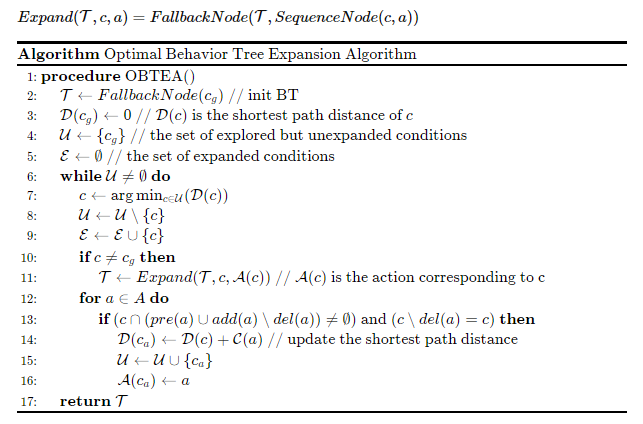

一套行为树扩展算法的演示项目 —— 给定初始状态、目标状态与动作集合，自动生成可靠抵达目标的行为树，支持执行、可视化与 PTML 导出。
从规划问题到可执行行为树的一站式能力。
从目标条件出发，反向扩展动作子树，直至行为树可在初始状态成功运行。
基于 tick 机制驱动运行，并统计执行代价（cost）与 tick 次数。
将生成的行为树序列化为 .ptml 文本，统一输出到 output/ 目录。
通过 Graphviz 将 .ptml 渲染为树状图（PDF / 图片）。
随机生成规划问题集，批量验证算法的正确性与性能表现。
核心思想：以目标条件为根，按最短路径距离顺序扩展条件与动作，构造最优行为树（OBTEA）。

源码、脚本与产物清晰分层，便于维护与扩展。
BT_Expansion/
├── main.py # 演示入口：规划 → 生成行为树 → 执行 → 导出 PTML
├── requirements.txt # 依赖清单
├── output/ # 所有生成产物（.ptml / 渲染图等）
│ ├── MoveBtoB.ptml
│ ├── ptml_tree # Graphviz 源
│ └── ptml_tree.pdf # 渲染结果
├── src/ # 源代码
│ ├── bt_expansion/ # 核心算法包
│ │ ├── algorithm.py # 行为树扩展算法（BTExpAlgorithm）
│ │ ├── planning.py # 规划基础：Action、状态转移、数据打印等
│ │ └── examples.py # 内置规划问题示例集
│ ├── behavior_tree/ # 行为树节点定义与 PTML 编译器
│ ├── behavior_lib/ # 行为节点库（Selector / Sequence / Inverter 等）
│ └── utils/ # 加载、绘制等工具
└── scripts/ # 独立脚本
├── visualize_ptml.py # 读取 output/ 中的 .ptml 并渲染为树图
└── benchmark.py # 批量随机测试（鲁棒性 / 性能基准）
要求 Python 3.8+。
pip install -r requirements.txt
brew install graphviz，Ubuntu 执行 sudo apt-get install graphviz。
一行命令跑通完整流程。
python main.py
程序将依次完成：
MoveBtoB）并打印动作 / 状态表；output/MoveBtoB.ptml；python scripts/visualize_ptml.py # 输出 output/ptml_tree.pdf python scripts/benchmark.py # 批量随机测试（鲁棒性 / 性能基准）
各模块职责一目了然。
核心类 BTExpAlgorithm，典型用法：
from bt_expansion.algorithm import BTExpAlgorithm, state_transition
algo = BTExpAlgorithm(verbose=True)
algo.clear()
algo.run_algorithm(start, goal, actions) # 生成行为树，保存在 algo.bt
algo.print_solution() # 打印行为树
ptml = algo.save_ptml_file("MoveBtoB") # 导出 PTML 至 output/
val, obj, cost, ticks = algo.bt.cost_tick(state, 0, 0) # 执行行为树
Action：动作类，包含前提 pre、增加效果 add、删除效果 del_set 与代价 cost。state_transition(state, action)：根据动作计算后继状态。print_action_data_table(goal, start, actions)：以表格形式打印规划问题。内置 MoveBtoB、MakeCoffee、SoftdrinkCost、Test 等多个规划问题，每个函数返回 (goal, start, actions)。示例 MoveBtoB：
def MoveBtoB():
actions = []
a = Action(name="Move(b,ab)")
a.pre = {'Free(ab)', 'WayClear'}
a.add = {'At(b,ab)'}
a.del_set = {'Free(ab)', 'At(b,pb)'}
a.cost = 1
actions.append(a)
# ... 其余动作
start = {'Free(ab)', 'Free(as)', 'At(b,pb)', 'At(s,ps)'}
goal = {'At(b,ab)'}
return goal, start, actions
BehaviorTree.py：定义叶节点 Leaf（动作 act / 条件 cond）与控制节点 ControlBT（选择器 ? / 序列 >），均实现 tick 方法。ptml/：PTML 语法（ANTLR4 生成的词法 / 语法分析器）及编译器。所有运行时生成的文件统一写入 output/ 目录。
| 文件 | 说明 |
|---|---|
*.ptml | 行为树的 PTML 文本表示 |
ptml_tree | Graphviz DOT 源文件 |
ptml_tree.pdf | 行为树渲染图 |
本项目实现的算法源自以下论文。如对你的研究有帮助，请引用。
@article{cai2021bt,
title = {BT Expansion: a Sound and Complete Algorithm for Behavior
Planning of Intelligent Robots with Behavior Trees},
author = {Cai, Zhongxuan and Li, Minglong and Huang, Wanrong and Yang, Wenjing},
journal = {Proceedings of the AAAI Conference on Artificial Intelligence},
volume = {35},
number = {7},
pages = {6058--6065},
year = {2021},
doi = {10.1609/aaai.v35i7.16755}
}
尊重原作者版权，遵循引用要求。